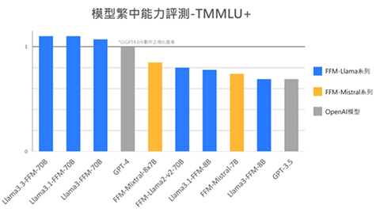

Llama3.3-FFM-70B
具備卓越繁中與多語能力，能同時調用多項外部工具並維持高準確率
- ★ 優異繁中和多語言處理能力 ★
- ★ 高準確 Tool Call 工具調用能力，助力企業打造高效 AI Agent ★
- ★ Tool Call 準確率高達 94 %，效率、精準性、穩定性全面升級 ★
- ★ Parallel Call 並行處理不卡關，相較原生模型大幅提升準確率 ★
- ★ 具備 OpenAI API 相容性，模型串接無痛轉換 ★
Llama3.3-FFM繁中能力超越GPT4.0

Tool Call高準確率，打造高效AI Agent
適用情境
• 打造AI自動工作流
AI Agent 精準串聯多個工具，例如同時調用CRM系統更新客戶資料、觸發郵件發送API、以及在數據庫生成交易紀錄，將原本仰賴人力的多步驟流程在瞬息間完成。
• 並行處理能力躍升
Parallel Tool Call 並行呼叫多系統可同步執行如多城市天氣查詢、多用戶資料處理、同時查詢不同API等任務，大幅減少工具調用及對話延遲時間。
• 提升用戶體驗
精準的工具調用能力能讓模型根據對話內容動態呼叫最合適的工具，讓用戶體驗更流暢、互動更自然，尤其在客服或個人助理場景表現突出。